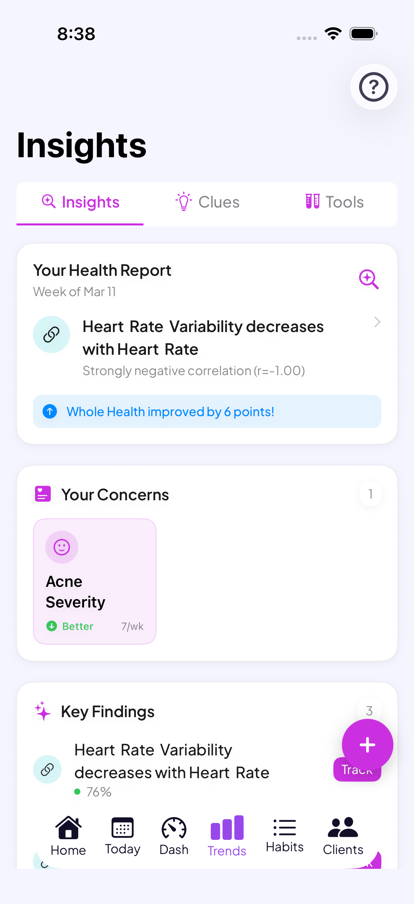

Track Brain Fog With Your Cycle: 5 Apps 2026
Some weeks your brain feels sharp. Other weeks you reread the same email three times, lose a word mid-sentence, or walk into a room and forget why. If that fog seems to show up around the same point every month, this guide covers what's known about concentration and the menstrual cycle, 5 apps for logging brain fog day to day, and exactly what to track so your own pattern becomes visible instead of just a feeling.
Full Transparency
This guide is published by Holland Neurotech Inc., the company behind Go Go Gaia. Go Go Gaia is one of the five apps compared here. We included it because we think it's a strong option for this use case, and we've been honest about its limitations too. Each app on this list does something well, and the right one for you depends on what you're actually trying to log.
Quick Answer: Which App Should You Use?
The right pick depends on whether you want deep correlation, pure speed, a cycle-first tracker, or a way to actually write about what a foggy day feels like. Here are the picks by use case:
- For treating brain fog as a trackable factor: Bearable. Rate concentration or "word-finding" on its own scale and see what it correlates with
- For the fastest possible daily log: Daylio. Under 10 seconds a day, no cycle awareness built in
- For a light, privacy-first cycle tracker: Clue. Add a mind or focus tag to a clean, science-first period tracker
- For actually journaling about foggy thinking: Moodnotes. A CBT-style thought journal for noticing patterns, not just rating them
- For concentration logged alongside cycle, sleep, mood, and food in one place: Go Go Gaia. 1-tap logs connected to your other data automatically
How We Picked These Apps
We shortlisted the 5 apps below from what people actually use to log concentration, focus, and mental clarity day to day, and compared them on what matters most for this use case: whether brain fog can be logged as its own custom symptom or factor, how fast a daily entry is, whether logs connect to cycle phase, and whether the app surfaces patterns for you automatically. Pricing was re-verified on the App Store in August 2026, and we read each app's current privacy policy rather than relying on its marketing pages.
Full disclosure: this site is published by Holland Neurotech Inc., the maker of Go Go Gaia. The list isn't ranked. Each app is presented as the fit for a specific need, we include our own app only where it genuinely belongs, and we say plainly when a competitor is the better choice.

Medical Disclaimer
This article is for educational and informational purposes only and does not constitute medical advice. It can't tell you why your concentration slips or whether it needs medical attention. Tracking apps record patterns. They don't diagnose or treat anything. Always talk with your doctor or another qualified healthcare provider about ongoing brain fog or any symptoms that concern you. Individual experiences vary, and what's typical for one person may not be typical for another.
What's Known About Brain Fog and Your Cycle
Concentration and mental clarity appear to shift across the menstrual cycle for a lot of people. The Office on Women's Health describes premenstrual syndrome as a group of physical and emotional symptoms many people notice in the one to two weeks before their period starts, and lists trouble with concentration or memory among the emotional and mental symptoms[1].
Hormonal changes in general are also linked to brain fog more broadly. The Cleveland Clinic's overview of brain fog names hormonal changes, including the shifts that happen during pregnancy or menopause, as one of the things connected to foggy thinking[2]. That's a broader hormone-cognition link than the cycle-specific one above, but it points the same direction: hormones and mental clarity are connected in ways researchers are still working out in detail.
None of this means every foggy day is about your cycle. Sleep, stress, screen time, and a packed schedule all shape concentration too, and any of them can matter more than cycle phase in a given week. That's exactly why a single hazy afternoon doesn't tell you much on its own, and why logging over 2 to 3 cycles matters more than any general rule.
It's also worth naming what this article isn't. This isn't a claim that brain fog always means something is wrong, and it isn't a list of conditions to worry about. It's a guide to logging what's actually happening for you, so if you do decide the pattern is worth a conversation with a doctor, you're bringing data instead of a vague sense that something feels off.
How We Compared These Apps
We compared each app on its App Store listing, published pricing, privacy policy, and recent user reviews, all checked in August 2026. We did not run a clinical study, and we haven't hands-on tested every feature of every app. Full disclosure: we make Go Go Gaia, one of the five apps here.
We weighted four things most heavily for this use case: whether concentration or mental clarity gets its own custom field (not just buried inside a general mood rating), how fast a daily log is, whether the app ties your logs to cycle phase, and whether it surfaces patterns for you instead of leaving you to scroll back through old entries.
The 5 Apps Compared
These five split into three groups: correlation-first trackers (Bearable, Go Go Gaia), a speed-first logger (Daylio), a cycle-first tracker you can adapt (Clue), and a thought-journaling app built around noticing patterns rather than rating them (Moodnotes). The right pick depends on whether depth, speed, cycle context, or reflection matters most to you.
For Treating Brain Fog as a Trackable Factor: Bearable
Best if you want: Concentration, word-finding, or mental clarity rated on their own scale, correlated against sleep, cycle, and anything else you log.
Key Features
- Fully custom symptoms and factors, so you can rate "brain fog," "word-finding," or "mental clarity" on scales you define
- "Impacts" view that correlates your factors with your outcomes over time
- Optional period tracking module
- Sleep and activity data import from Apple Health and Google Fit
- Medication and supplement logging
Strengths
- The correlation engine is genuinely strong, among the best available for a multi-factor question like "does my focus track with sleep, cycle day, or something else"
- Designed with chronic-condition and neurodivergent users in mind, and many people already use it for exactly this kind of pattern-hunting
- Generous free tier and strong App Store ratings (4.8/5 on iOS)
- GDPR-compliant and states it doesn't sell data
- Cross-platform (iOS and Android)
Limitations
- Setup takes real time. There are a lot of factors to configure before the correlation view gets useful, which can itself feel like a lot on a foggy day
- Cycle tracking is a module, not the core. No phase predictions or cycle-specific insights
- No nutrition tracking
Who Should Choose This
- You want to correlate brain fog with several other factors at once, not just your cycle
- Correlation depth matters more to you than cycle features
- You need Android support
Pricing
Free (generous tier), Premium ~$34.99/year or ~$6.99/month. Available on iOS and Android.
For the Fastest Possible Daily Log: Daylio
Best if you want: A log you'll actually keep, because each entry takes under 10 seconds.
Key Features
- Micro-logging: pick a mood, tap a few activities, done
- Custom activities, so you can add "foggy morning," "lost my train of thought," or "sharp and focused"
- Streaks, reminders, and simple stats
- Mood-over-time charts and activity counts
Strengths
- The lowest-friction logging on this list. On a genuinely foggy day, a 10-second log is the version of this you'll still finish
- Custom activities adapt reasonably well to logging brain fog as a proxy
- Inexpensive premium tier
- Cross-platform (iOS and Android)
Limitations
- No dedicated concentration scale and no cycle tracking. You're repurposing mood and activity fields to stand in for brain fog
- To see cycle patterns, you'd keep a separate period tracker and line up the dates yourself
- Analysis is basic: mood averages and activity counts, not multi-factor correlations
Who Should Choose This
- You've abandoned detailed trackers before and need the absolute minimum daily ask
- You're fine cross-referencing a separate period app
- You want a general mood tracking app more than a concentration-specific one
Pricing
Free (core features), with an inexpensive premium upgrade (typically under $5/month). Available on iOS and Android.
For a Light, Privacy-First Cycle Tracker: Clue
Best if you want: A clean, science-first cycle tracker where you add a mind or focus tag on top.
Key Features
- Cycle tracking with phase information and predictions
- Custom tags, so you can create your own labels like "brain fog" or "word-finding," alongside built-in mind and focus categories
- 30+ built-in tracking categories, including mood, energy, and sleep
- Science-backed content reviewed by researchers
- Based in Germany, operates under EU GDPR rules
Strengths
- Mind and focus tags sit right next to your cycle data by default, no extra setup required
- Clean, minimal interface that's quick to log in, which matters on a low-focus day
- Data handling grounded in EU regulation, which some people specifically look for in a cycle app
- Cross-platform (iOS and Android)
Limitations
- Pattern analysis is limited. You'll mostly spot trends by scrolling back through past cycles yourself
- No connection between your tags and sleep, exercise, or other lifestyle factors
- Free users see regular prompts to upgrade to Clue Plus
Who Should Choose This
- You want a cycle tracker first and a focus tag as one piece of it
- You prioritize where your data is handled and a simple interface
- You're happy to review your own data for patterns
Pricing
Free (with upgrade prompts), Clue Plus ~$39.99/year. Available on iOS and Android.
For Actually Journaling About Foggy Thinking: Moodnotes
Best if you want: A CBT-style thought journal that prompts you to write about what a foggy or scattered day actually felt like, not just rate it.
Key Features
- Mood logging with emoji selection or photo attachment
- Journaling prompts grounded in cognitive behavioral therapy and positive psychology, designed to help you notice thinking patterns
- Self-awareness articles from mental health professionals
- Mood statistics and trends over time
- Apple Watch app and iCloud sync
Strengths
- The prompts push you past a single rating and into actually describing the day, which can surface details a number misses, like losing a word mid-sentence or rereading the same line three times
- Articles are written by mental health professionals rather than generic content
- Works well as a companion to a separate period tracker if you want cycle context too
Limitations
- No cycle tracking at all, and no dedicated "brain fog" field. It's a general mood and thought journal you'd adapt to this use case
- iOS only, based on current store listings
- Subscription pricing runs higher than most apps on this list, with plans that can reach roughly $14.99 a month or up to about $89.99 a year depending on region
Who Should Choose This
- You want to write a sentence or two about a foggy moment, not just tap a rating
- You're drawn to a CBT-style approach over pure symptom logging
- You're comfortable pairing it with a separate app for your cycle dates
Pricing
Free to download, with subscription plans for full access (roughly $14.99/month, or annual plans that can run up to about $89.99/year depending on region). Available on iOS.
For Concentration Logged Alongside Everything Else: Go Go Gaia
Best if you want: Brain fog tracked in the same app as your cycle, sleep, mood, food, and workouts, with the app connecting the dots for you.
Key Features
- 1-tap logging for custom symptoms like "brain fog" or "sharp focus," alongside cycle, sleep, mood, food, and fitness tracking in one app
- Correlation insights that connect your logs to cycle phase, sleep, and exercise, drawn from your own data
- Health Clues: save a hypothesis like "my concentration dips the week before my period" and the app checks it against your logged data over time
- Passive wearable data (Apple Watch, Oura, Garmin, WHOOP) fills in sleep and recovery without manual logging
- Voice logging, including on Apple Watch, for days when typing feels like too much
Strengths
- Tracks cycle, brain fog, sleep, mood, food, and workouts in one free app, so you're not juggling three apps to see how they relate
- Surfaces patterns like "brain fog logs cluster in the days right before your period" instead of leaving you to eyeball a calendar
- 1-tap logging keeps daily friction low while still feeding the correlation engine
- No ads, no data selling
Limitations
- iOS only. No Android version yet
- Newer app with a smaller community than Clue or Flo
- Full AI insights and advanced correlations require premium ($9.99/month or $49.99/year)
Who Should Choose This
- You want brain fog logged in the same app as your cycle, sleep, and food, with the pattern-finding done for you
- You wear an Apple Watch, Oura, Garmin, or WHOOP and want sleep data included without extra effort
- You're on iPhone and prefer one app over juggling two or three
Pricing
Free (most features), Premium $9.99/month or $49.99/year for full AI insights and advanced correlations. Available on the iOS App Store.
Feature Comparison Table
Quick read of the table: Bearable and Go Go Gaia both give brain fog a dedicated field and analyze it against other factors for you. Daylio is fastest but has no dedicated concentration scale or cycle awareness, Clue is cycle-first with lighter analysis, and Moodnotes trades speed for actual journaling depth. Here's the full picture (✅ full support, ⚠️ partial, 🔒 premium only, ❌ not available):
| Feature | Bearable | Daylio | Clue | Moodnotes | Go Go Gaia |
|---|---|---|---|---|---|
| Dedicated brain fog / concentration field | ✅ Custom factor | ⚠️ Via activities | ✅ Custom tag | ⚠️ Via journaling | ✅ Custom habit |
| Cycle & phase tracking | ⚠️ Optional module | ❌ None | ✅ Core focus | ❌ None | ✅ With phase context |
| 1-tap / fast logging | ⚠️ Depends on setup | ✅ Built for it | ⚠️ Quick, not 1-tap | ❌ Journaling takes longer | ✅ 1-tap habits |
| Thought-pattern / CBT-style prompts | ❌ None | ❌ None | ❌ None | ✅ Core design | ❌ None |
| Correlation insights | ✅ "Impacts" view | ⚠️ Simple stats | ❌ Manual review | ⚠️ Basic trends | ✅ Multi-factor |
| Sleep & wearable data | ✅ Health app import | ❌ None | ⚠️ Basic Apple Health | ❌ None | ✅ Watch, Oura, Garmin, WHOOP |
| Nutrition & workout tracking | ❌ None | ❌ None | ❌ None | ❌ None | ✅ Both, in one app |
| Doctor-ready export | 🔒 Premium | 🔒 CSV, premium | ⚠️ Limited | ⚠️ Limited | ✅ Free |
| Free tier quality | ✅ Generous | ✅ Generous | ⚠️ Upgrade prompts | ⚠️ Basic logging only | ✅ Generous |
| Platforms | iOS + Android | iOS + Android | iOS + Android | iOS only | iOS only |
| Best for | Deep correlation | Fastest logging | Light cycle-first | Journaling depth | Brain fog + cycle + everything else |
When Another App Is the Better Choice
Go Go Gaia isn't the right pick for everyone reading this, and a few of these apps win outright for specific situations. Here's where we'd honestly point you elsewhere, in two or three sentences each.
Choose Moodnotes if you want to write about it, not just rate it
If a number never quite captures what a foggy day felt like, Moodnotes trades speed for depth. Its CBT-style prompts push you to describe the moment, which can surface details, like losing a word or rereading a sentence, that a 1-to-5 scale flattens out.
Choose Bearable if brain fog is one of several factors you're comparing
If you're tracking concentration alongside migraines, anxiety, gut issues, or several medications, Bearable's "Impacts" view is the strongest multi-factor correlation tool on this list. It's also on Android, which Go Go Gaia isn't. Budget an evening for setup and it will repay you.
Choose Daylio if you'll only ever log one tap a day
Be honest with yourself about your track record with trackers. If every detailed app has died on your phone within two weeks, Daylio's 10-second entries are the version of this that survives. You'll give up a dedicated concentration scale and cycle awareness, but a 3-month Daylio streak beats a 5-day streak in anything fancier.
Choose Clue if you want the lightest cycle-first option
If you mostly want a clean period tracker with a mind or focus tag on top, Clue does that with minimal fuss and data handled under EU GDPR rules. You'll review patterns yourself rather than getting computed insights, and for some people that's plenty.
What to Log to See Your Own Pattern
Log four things daily: concentration or mental clarity, sleep, your period dates, and anything unusual that day. Keep each one to a tap or a 1-to-5 rating, and keep it up for 2 to 3 full cycles. That's the whole method. Here's how to make it stick:
- Make logging stupidly easy. One tap or one rating per item. The longer a daily log takes, the less likely it is to survive past a few weeks, especially on the days it matters most. Design for your foggiest day, not your sharpest.
- Define your scale once, up front. Decide what a 1 and a 5 mean for you (1 might mean "couldn't hold a thought together," 5 might mean "sharp all day") and keep the meaning stable across the whole log. Consistent labels make patterns readable later.
- Track sleep alongside concentration, not separately. A foggy week after several short nights isn't necessarily a cycle pattern, it might mostly be a sleep pattern. Apps that pull sleep from a wearable automatically remove this guesswork.
- Anchor everything to cycle day. The pattern you're hunting is "the same cycle week, repeating." After 2 to 3 cycles, compare your late luteal week (the week before each period) across months and look for repeats.
- Write down the outliers. A red-eye flight, a big deadline, a bad night with a sick kid. A one-line note saves you from misreading a chaotic week as a hormonal one.
- Decide what to do with the pattern once you see it. Some people use it to plan lighter cognitive loads around a predictable foggy stretch. Some bring the record to a doctor if the fog feels like more than a normal dip. What you do with the data is up to you, the app's job is just to make the pattern visible.
A tracking app does two of these steps for you: a 1-tap log like Go Go Gaia's keeps the friction near zero, and correlation insights handle the cycle-day comparison automatically, surfacing things like whether your brain fog logs cluster in the second half of your cycle. A plain notes app or a printed calendar can work too, if you'll fill it in every day. The app's advantage is that it does the lining-up for you. If low friction is the deciding factor, our comparison of apps by how little logging they actually require ranks options on exactly that.
Frequently Asked Questions
The short version: concentration appears to shift across the cycle for many people, no single app is required to see your own pattern, and 2 to 3 tracked cycles is generally what it takes. The details:
Why does my concentration change around my period?
Many people notice shifts in focus, word-finding, or mental clarity at certain points in their cycle. The Office on Women's Health lists trouble with concentration or memory as one of the emotional and mental symptoms of PMS, typically showing up in the one to two weeks before a period. The shape and timing of that shift is different for everyone, which is why logging your own cycles is more useful than a general rule.
Is there an app just for tracking brain fog?
There's no dedicated app built specifically for brain fog and cycle tracking. Bearable lets you rate brain fog as a custom factor and correlate it with other data, Moodnotes is a CBT-style thought journal for noticing thinking patterns, Daylio offers the fastest daily log, Clue supports mind and focus tags inside a cycle-first tracker, and Go Go Gaia logs concentration alongside cycle, sleep, mood, and food in one app.
How long should I track brain fog before I see a pattern?
Plan on at least 2 full cycles, and 3 if you can manage it. One cycle can be thrown off by poor sleep, a stressful stretch at work, or travel. Comparing the same cycle week across 2 or 3 months is what makes a real pattern visible instead of a guess.
Is brain fog around my period the same thing as ADHD?
Cyclical brain fog and ADHD are different things, though they can look similar from the inside and some people track both at once. Our guide to tracking ADHD symptoms across your cycle covers the ADHD-specific pattern in more depth. A tracked log is what helps tell the two apart, not a guess.
Could this be perimenopause instead of a cycle pattern?
Perimenopause-related brain fog is a widely discussed experience, and it can overlap with premenstrual changes in the years before a cycle stops altogether. If your pattern feels bigger or less predictable than a dip before your period, our perimenopause guide covers what that transition can look like.
Should I log brain fog as a rating or write about it?
Either works, and some people do both. A simple 1-to-5 rating or a quick tap is easier to keep up daily, while a short written note captures details a number can't, like losing a word mid-sentence or rereading the same paragraph three times. A consistent simple log beats an inconsistent detailed one.
Can a tracking app diagnose why I have brain fog?
A tracking app records your patterns, it doesn't diagnose anything. What it can do is give you a dated record to bring to a doctor if you decide the fog is worth discussing, which is more useful than trying to describe how foggy the last few months felt from memory.
Final Thoughts
If your focus has a monthly rhythm, logging is the only way to know for sure, and to know your own shape of it rather than a general average. Two to three tracked cycles usually gets you there.
Pick the app that matches what you're actually trying to do: Bearable if brain fog is one of several factors you want correlated, Daylio for raw speed, Clue for a light cycle-first tracker, Moodnotes if you'd rather write about a foggy day than rate it, and Go Go Gaia if you want concentration logged alongside your cycle, sleep, mood, and food in one place.
Still deciding? Just pick one and log for two cycles. See what you find.
Most Patterns Take 2 to 3 Cycles to Show Up
That's the article's whole method in one line. A 1-tap brain fog log takes under 30 seconds a day, and by the end of your second cycle you can compare the same week across months and see whether your foggy stretch actually repeats.
Log brain fog with a single tap. The correlation insights do the cycle-day math for you.
Related Articles
References
- Office on Women's Health. "Premenstrual Syndrome (PMS)." womenshealth.gov/menstrual-cycle/premenstrual-syndrome
- Cleveland Clinic. "Brain Fog." my.clevelandclinic.org/health/symptoms/brain-fog